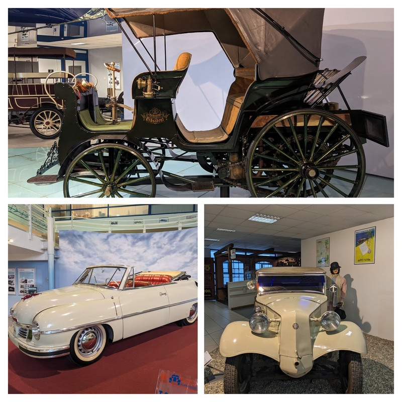
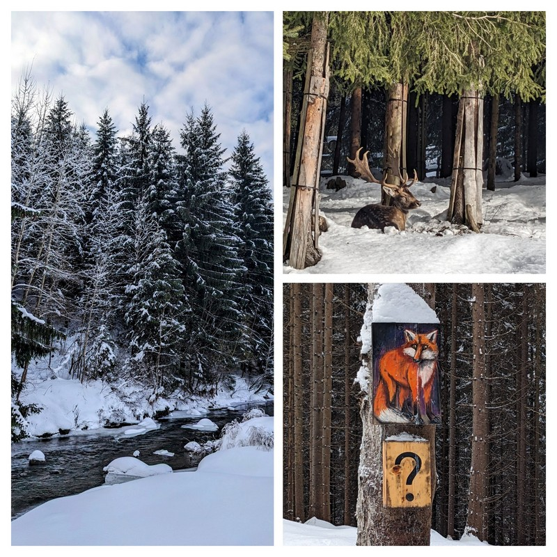
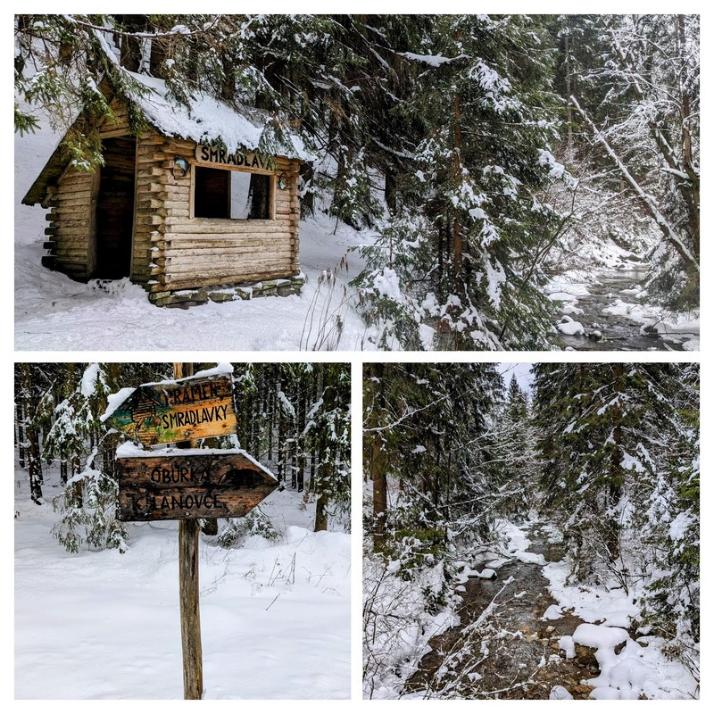
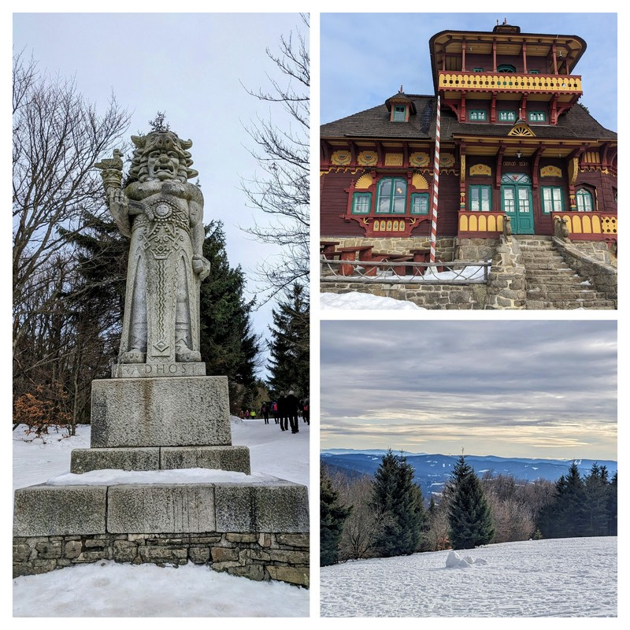
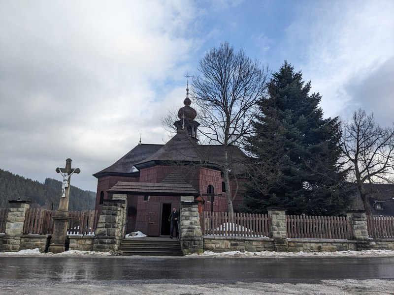
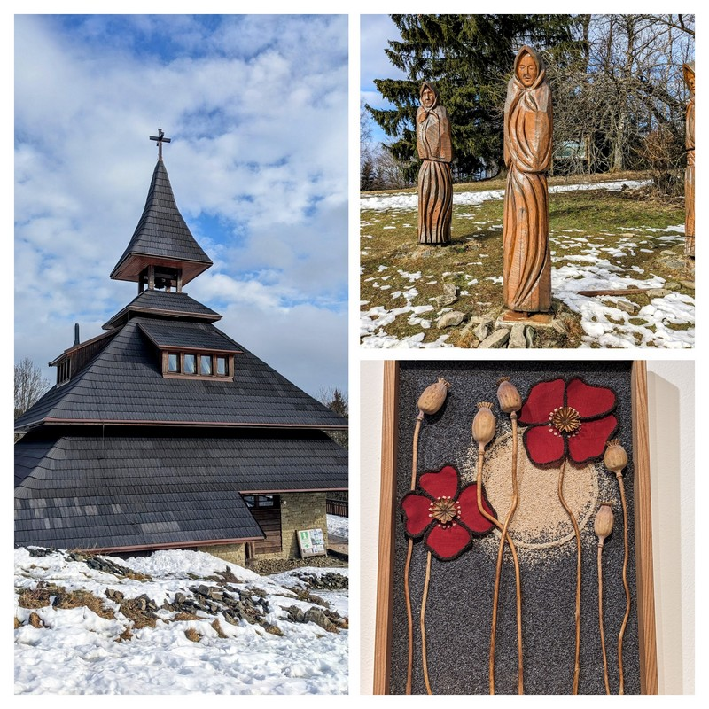

Máme tu nový rok, tak by se asi slušelo dohnat „resty“ z toho loňského, minimálně v mé výletnické rubrice. Protože tipů na výlety není zkrátka nikdy dost :-)
Muzeum Tatra Kopřivnice
Loni jsme naši tradiční zimní dovolenkovou destinaci – Jeseníky – vyměnili za Beskydy. A protože cesta do hor je vždycky dlouhá, přemýšleli jsme, jakou zastávkou si ji zpříjemnit. Volba padla na Kopřivnici, kde sídlí muzeum automobilů Tatra, a to jak osobních, tak nákladních. Nás by samozřejmě nejvíc zajímal depozitář Slovenské strely, ale bohužel tam měli zrovna zavřeno, takže jsme vzali zavděk expozicí osobních automobilů a moc se nám to líbilo. Expozice je rozsáhlá, ale dá se v pohodě za 1-2 hodinky projít. Najdete tu třeba stejný typ vozu, se kterým Hanzelka a Zikmund projeli Afriku a Jižní Ameriku, stejně jako různé závodní vozy či automobily, kterými se vozili komunističtí papaláši.

Obůrka, Bílá
Cílem naší zimní expozice bylo středisko Bílá, kde se dá nejen lyžovat, ale i podnikat různé baby-friendly procházky. Příjemný cílem pro milovníky zvířátek je třeba Obůrka, areál 6 samostatných ohrad, kde můžete pozorovat divoká prasátka, jeleny, daňky nebo muflony. K Obůrce se dá dojít po hezké malované naučné stezce, která vede Beskydskou magistrálou.

Pramen Smradlavá v údolí Velké Smradlavy u Bílé
Asi se nelze divit, že na tento výlet jsem s sebou nikoho dalšího nenalákala :-D Je to však škoda, protože tento sirný pramen s charakteristickým zápachem je nejen pitný, ale dokonce i léčivý při žaludečních potížích či nemocech kloubů, a údajně nikdy nezamrzá. Z Bílé k němu vede lesem asfaltka a jedná se o nenáročnou, ale příjemnou procházku.

Pustevny a Radegast na Radhošti
Co by to bylo za dovolenou v Beskydech bez návštěvy Radhoště, že… pokud se zde tedy zrovna nekoná festival ledových soch a tento nápad nemají stovky dalších turistů :-D Ledové sochy jsme při pohledu na tu děsivou frontu vynechali, výšlap k soše Radegasta byl ale povinnost. Počasí bylo krásné (což sem asi přilákalo ty davy) a mít víc času, asi bychom to hecli až na samotný vrchol Radhoště, ale nakonec jsme usoudili, že si to necháme na nějaké turisticky méně vypjaté období :-)

Kostel Panny Marie Sněžné, Velké Karlovice
Na zpáteční cestě domů jsme si ještě udělali několik malých zastávek – prvním z našich zastavení byl tento krásný roubený kostel z roku 1754 ve Velkých Karlovicích.

Zvonice na Soláni
Protože Oli sbírá turistické vizitky, hon za nimi nás občas zavede až na místa, která by nás jinak zřejmě nenapadlo navštívit - ostatně jako v případě zvonice na Soláni, která funguje zároveň i jako informační centrum a muzeum. Když už jsme se tu ocitli a ulovili potřebnou vizitku, nalákala nás paní z infocentra ještě na návštěvu aktuální výstavy obrazů a dalších výtvorů vyrobených z máku rukou výtvarnice Marcely Šimečkové. V okolí zvonice najdete také dětské hřiště a naučnou stezku s 10 zastaveními v podobě dřevěných soch, z nichž každá se váže k nějaké pověsti, ale na tu už jsme se nevydali, neb nás čekala ještě dlouhá cesta domů :-)
